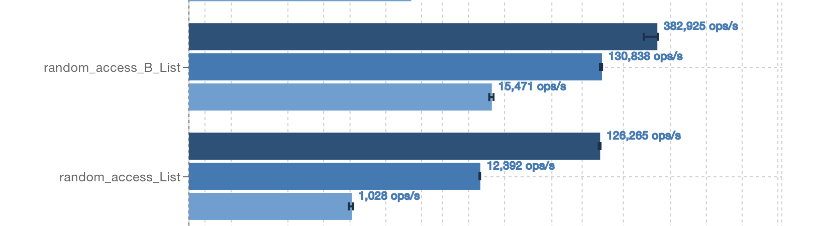
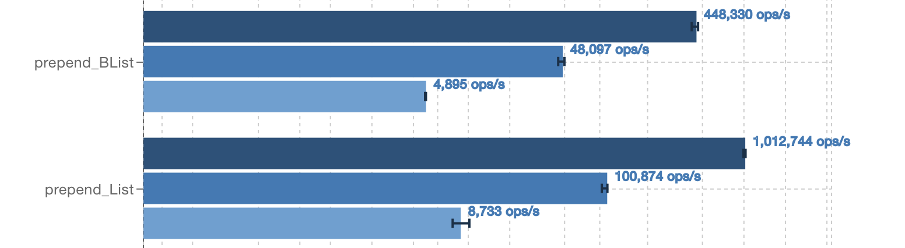

| Organization | Typelevel |
| Mentors | Arman Bilge and Sergey Torgashov |
| Github PRs | Basic framework and further additions |
This project aims to develop BList (Block List), an immutable linked list datatype that improves performance by reducing the number of pointer dereferences required to iterate over it. It does so by generalizing the node of a linked list to contain up to some constant number of elements in an array. This reduces pointer chasing by as much as a factor of that constant in the size of the list. A goal was to improve the performance of other Typelevel libraries, such as fs2’s Channel, where this new immutable list replaces the standard Scala List, but BList can also be used simply as a linked list since the implementation details are hidden to the user and the methods it provides closely follow that of the Scala List.
The first PR contains most of the methods expected to be provided for a linked list datatype including prepend, map, filter, concat and the like. It also contains simple unit tests, and property tests using scalacheck. The second PR builds upon the first. Typelevel’s relevant typeclasses are implemented for BList, providing “free” law tests through ScalaCheck. A mutable builder similar to that of Scala’s List was also added at this stage, allowing more efficient construction with appends. Iterator and Seq are also defined for BList and certain methods like prepend, which uses a “share and fork” strategy to save on copying memory, were improved. Finally, BList was benchmarked against Scala’s List and Vector by specific tasks, and benchmarking was performed downstream comparing fs2’s Channel to a version of Channel where its List field was replaced by BList.
The results of three runs of benchmarking (on a 2019 Macbook with an i5 chip) are provided here. The first is directly on the BList, populated by micro-benchmarks looking at specific situations in which to compare BList against Scala’s List and Vector datatypes. The other two, as mentioned above, are on fs2’s Channel. One with an underlying List, the other with an underlying BList.
One pattern observed throughout benchmarking was invariance over list length. If BList performs better than List for some benchmark, it often outperforms List for the same benchmark regardless of the size of the list. This can be seen in the results, available here:
| Directly on BList | Channel with BList | Channel with no changes |
BList outperforms List on repeated random accesses to elements within the list. This is a strength of BList, it can skip over blocks when searching for an element at a specified index. BList has efficient concatenations for the same reason.

In contrast, a weakness of BList in its current state is prepend. Speculation on this is in the following section.

Unfortunately, benchmarking downstream in fs2’s Channel, where its underlying list is replaced with BList did not yield the results we hoped for. There was almost no difference before and after the data structure substitution. This could be because the List was not dominating the performance of Channel in the benchmarks, but it is hard to draw any conclusions. BList is expected to have applications elsewhere.
A limitation BList is facing at this point in development is that its prepend takes twice the time of Scala List prepend in benchmarking. This 2x slowdown is even consistent across different lengths of list and different block sizes. Overall, it seems that variations in blocksize do not have a large effect on performance for many of the operations. A blocksize of 24 was chosen, but it did not perform significantly better than any other blocksize between 10 and 90, especially considering how fickle benchmarking is on a single machine, it had to be chosen almost arbitrarily.
In contrast to this limitation, a strength of BList is the “fork and share” strategy for prepending proposed by Sergey; prepends often occur in batches of many at a time to build out a list, and the addition of an Atomic Boolean eliminates the requirement to copy the array in the head block for every prepend, all while remaining threadsafe. This is an interesting optimization that the Scala List does not have, and seems almost uniquely applicable to BList. It is to blame for speeding up consecutive prepends by about 25%.